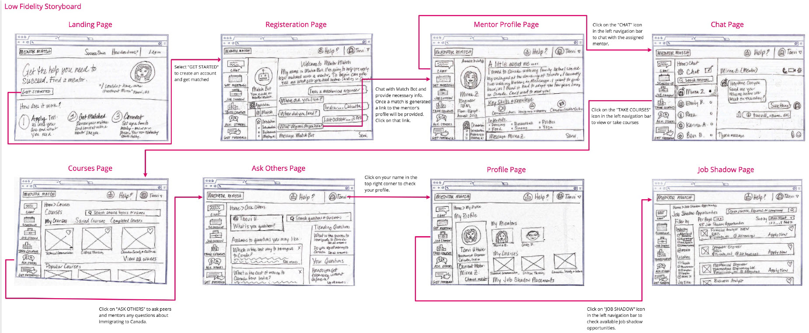
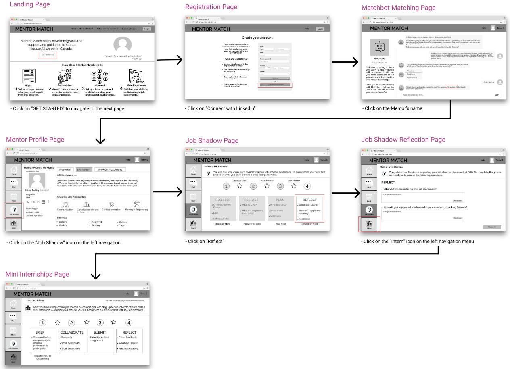

Mentor Match
Mentor Match is an online platform that helps new immigrants start a successful career in Canada by helping them gain Canadian experience and build thier professional network

UX project by: Karina Abreu, Emily Bergeron, Rhea Makund, Mirna Zohiry
The Problem
• Many skilled workers come to Canada and can’t find work in their field despite having the right technical skills.
• The government of Canada predicts that almost one million immigrants will enter the country over the next three years
• Most of them will be highly educated and skilled professionals
• Most of these skilled workers face challenges finding work even 4 years after arrival
• Foreign experience and credentials not being recognized and employers require Canadian Experience
• Only 24% of professional immigrants are working in field of expertise. This can lead
to underemployment and feelings of anxiety and uncertainty of how to proceed.
The Goal
The goal of this project was to design a solution to meet the
needs of the new immigrant community in Canada.
Adhering to a 12 week timeline, we completed our project following the UX design process:
The UX design Process:
Empathize
To gain empathy for our users, we began the project by conducting a primary research study.
My Role:
• I conducted interviews with 2 recent immigrants
• I planned and executed a digital ethnography study
• I analyzed and synthesized allo data colected from our study
Research Methods
• User Interviews: Semi-structured interviews with 7 new immigrants who arrived within the last 4 years
• Digial Ethnography: Study of online social interactions between new immigrants
• SME Interviews: Semi-structured interviews with 2 Subject Matter Experts (SME)
Key Findings
• Newcomers arrive as skilled workers & have an expectation they will find work in their field
• Newcomers have few contacts/no network
• Employers want applicants to have Canadian experience, as international experience & credentials are not recognized
• Newcomer services focus on basic needs, no focus on getting new Canadians job ready
• Learning about Canadian norms and culture are important for successfully landing a job
• The current situation creates a system where skilled workers are resentful, underemployed,
and hoping from one survival job to the next
Define
Using our research findings, we created a persona to better understand our users, thier goals and frustrations.
Meet Tanvi Sharma

The Current Job Hunting Process

We used the findings from our research study to define a solution to help new immigrants like Tanvi gain Canadian experience.
To find work Tanvi needs to...
• Learn about Canadian workplace culture so that she can demonstrate to employers that she can fit-in and assimilate
• Connect with other internationally trained professionals who are established in her field so that she can learn from thier experience
• Get recognition of her foreign credentials and experience so that she can be considered for roles that she is qualified for
Ideation
Based on Tanvi's need, we came up with a series of ideas that could hekp her achieve her goals of fiding relevant work in her field. We combined the ideas we generated into bigger themes, voted and prioritized ideas based on their impact in addressing Tanvi’s pain points - and the feasibility of executing each.

Mentorship came out as the winning idea. Based on our research, it was clear that new immigrants
had a strong need for advice and guidance throughout their journey in finding relevant work in Canada.
What is wrong with current mentorship programs?
• Low awareness: newcomers are not aware of of these programs, either because of lack of marketing, or simply because they don’t know
these types of programs exist because they’re not common in their home country.
• Not enough mentors: despite low awareness, there is still not enough mentors to meet demand
• Not accessable to all: mentoring programs are offered in-person, limiting their availability
How do we make the outcome of a mentorship program more tangible, more real, and valuable?
Our solution: Mentor Match
Mentor Match is an online service that helps new immigrants start a successful career in Canada through mentorship and
facilitated work experiences. A mentor can help Tanvi build knowledge of the Canadian market, workplace norms and culture. Once Tanvi
is ready, her mentor will help her secure mini-internships and job-shadowing opportunities - the tangible hands-on experiences
that new immigrants are looking for to add Canadian experience to their resume.
Watch the following video to learn more about Tanvi's story and how Mentor Match changed her life.
Prototyping
After defining Mentor Match as our solution, we developed low-fidelity sketches & conducted lean evaluation
with users. We used evaluation results to created a medium-fidelity prototype.
Sketches
Usability Testing
We conducted moderated usability testing with 4 representative users using our low-fidelity prototype. Three sessions were
conducted in person, and one session was conducted remotely. Sessions lasted from 20-40 minutes
and we walked users through our concept/solution using a low-fidelity paper prototype and our
testing script. We solicited their feedback on our ideas and asked them to complete simple tasks.
As we moderated each session, we took notes of user comments, feedback, and reactions.
User Feedback
This is a summary of the findings from our lean evaluation usability testing:
• Focus scope to one-to-one mentoring model. Users were confused with the concept of having two mentors at the same time
• The benefits and value proposition offered by Mentor Match should be made more obvious.
• The sign-up/matching process, which is facilitated by a chatbot, should be clearly explained at the onset
• Improve new mentee onboarding experience. The sign-up/matching process should be separated into 2-steps
• Users liked the layout and presentation of the mentor’s profile. The content of the profile provides a personalized introduction to the mentor
• There is a disconnect between concept of mentoring and other features offered. Too many features are offered that are not related to each other
Medium-Fidelity Prototype
We used the feedback from our usability testing to refine our solution. We focused our minimum viable product to:
• intelligent mentor matching
• job shadow placements
• mini-internships
Using Figma, we created a clickable med-fidelity prototype. Here is a video of Mentor Match from the mentees perspective.
Medium Fidelity Story Board
How will the job hunting process change with Mentor Match?
With a mentorship program, newcomers would get access to the hidden job market and guidance from someone who truly knows what is needed to successful
in the Canadian workplace. A mentor who has walked in thier new immigrants shoes. There’s still a level of anxiety when the job application is made,
but the participant is much more positive about possible outcomes.
Summative Usability Evaluation
We conducted a summative evaluation with two goals in mind: to learn how Mentor Match’s program concept is received & understood by new immigrants,
and to understand usability deficiencies and how to improve the Mentee experience in terms of UX/UI.
We conducted in-person moderated Usability tests with 4 new immigrants between the ages of 25-40 who arrived in Canada in the past 3 years
( 2 users came from India, 1 from the UK). Our test was comprised of a pre-test questionare, completing of 4 tasks, a post-test questionare, product reachtion form
and open-ended feedback.
Overall, users considered the Mentor Match experience a generally positive one, with 3 out of 4 users suggesting it was a “meaningful” product.
Users clearly understood who the program was for and what the key benefits were. In terms of the Job Shadow and Mini-internship parts
of Mentor Match, they were well received conceptually, with mini-internships being seen as a the most valuable feature given their ability
to provide users with concrete evidence of their “Canadian experience”; however, these pages fell flat in terms of execution, as the UI was confusing.
One could deduce that the concept overall hits on what it needs to, but in execution, the is room for improvement in the UI.